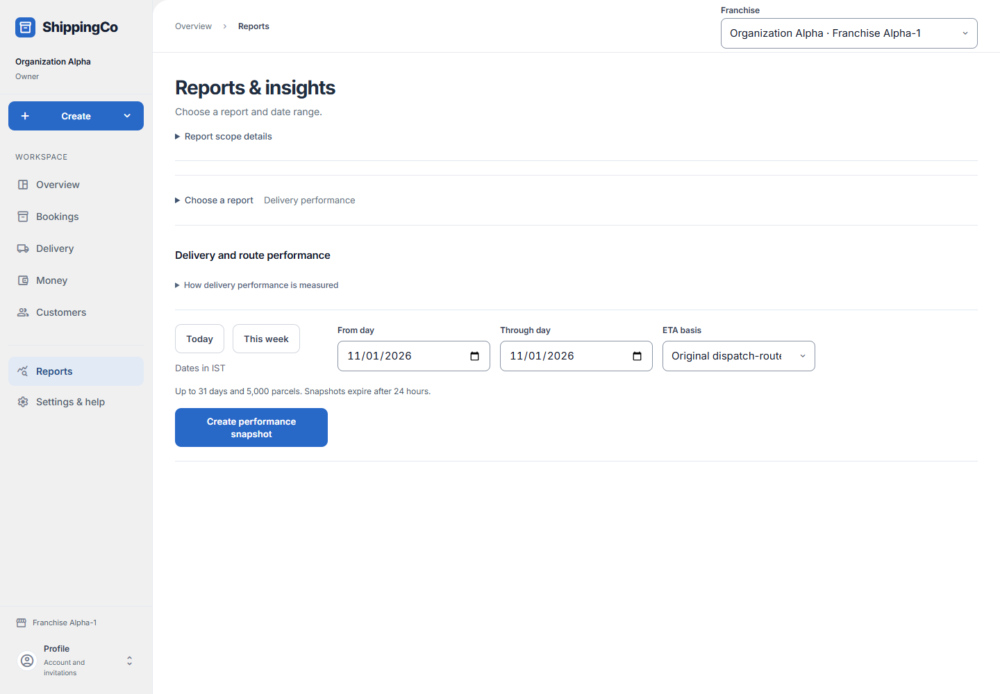
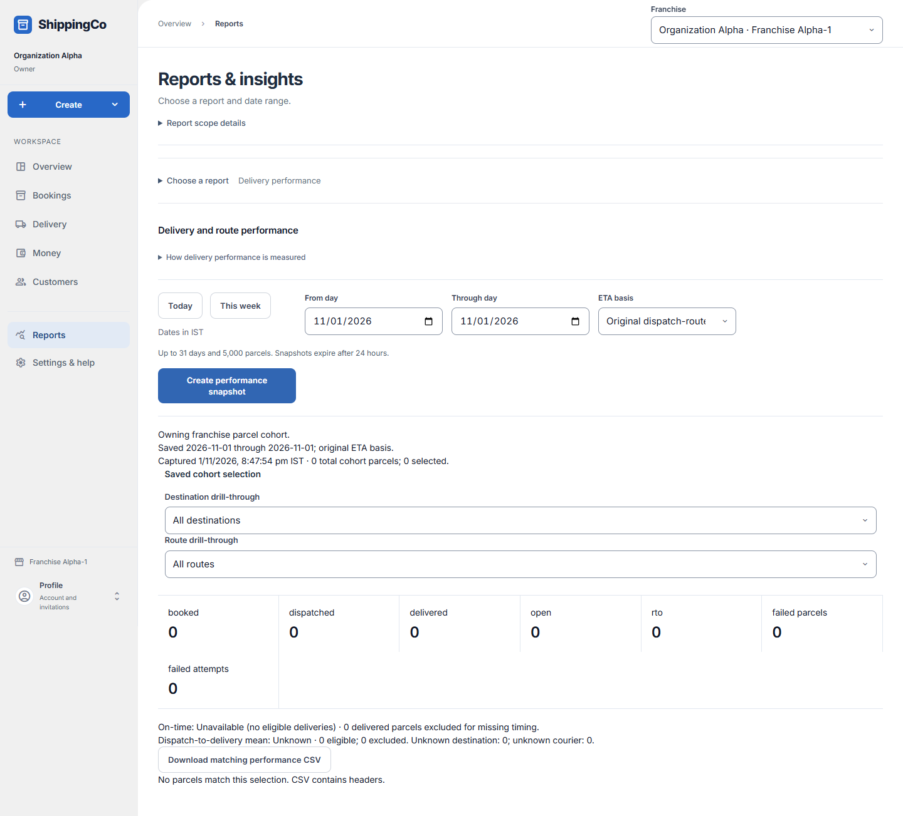

Delivery performance report
What this helps you do
See which parcels were delivered and compare delivery against the expected time.
Before you start
Sign in and choose the correct branch. Your access decides which actions you can use.
Read the delivery measurement correctly
- Open Reports, expand Choose a report and choose How are deliveries doing? / Delivery performance. Open How delivery performance is measured before comparing figures.
- Today and This week provide date shortcuts. From day and Through day select booking dates in Indian time, up to 31 days. ETA basis chooses Original dispatch-route ETA or Last applied ETA before delivery.
- Select Create performance snapshot. The saved group contains parcels from those booking dates; each parcel is counted once, including parcels attached through both a group and a direct route source.
- After the result loads, use Destination drill-through and Route drill-through to inspect the saved group. Selecting a destination clears the route selection. All destinations and All routes widen the result.
- Open Saved timing and route on a parcel row for actual delivery time, original and revised ETA and their versions, route, departure and arrival. Unknown timing does not prove an on-time delivery.
- Load more parcels shows the next evidence rows. Download matching performance CSV uses the saved report and selected group where your role permits export. An empty selection produces headers rather than invented rows.
- Saved reports contain at most 5,000 parcels and expire after 24 hours. Retry same performance request completes the original uncertain request; Retry saved performance reloads saved evidence. Create a new snapshot after expiry.
Quick steps
- Open Reports and choose Delivery performance.
- Set the dates and ETA basis. Create performance snapshot.
- Use the destination and route choices to narrow the saved result.
- Read the parcel evidence. Download the matching CSV if allowed.

Current app screen with synthetic review data. Names, references and amounts are examples, not customer records. Select the image to enlarge it.Fields and choices
- From day / Through day: Choose a period of up to 31 days.
- ETA basis: Original dispatch-route ETA uses the first expected arrival. Last applied ETA before delivery uses the later estimate saved before delivery.
- Destination drill-through: Show all destinations or one destination in the saved report.
- Route drill-through: Show all routes or one route in the saved report.
What to check
- ETA means expected arrival time.
- A report can include up to 5,000 parcels and expires after 24 hours.
- If the saved report expires, create a new one.
- Missing ETA information cannot prove that delivery was on time.
Saved performance result and filters

Synthetic review snapshot with zero parcels in the selected booking-date period. Zero counts are test-period results, not real business performance. On-time performance is unavailable because there are no eligible deliveries.About this guide
Checked against the web app source on 1 November 2026. Examples are not real business records.